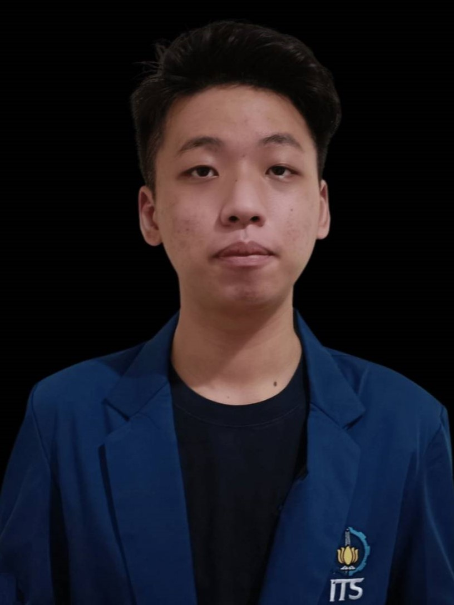

| Informasi Umum | |||
|---|---|---|---|
|  | Nama Lengkap | : | Kevin Nathanael Halim |
| Tempat, Tanggal Lahir | : | Surabaya, 24 September 2003 | |
| Jenis Kelamin | : | Laki-laki | |
| Agama | : | Kristen | |
| Alamat | : | Pantai Mentari Blok T no. 2, Kota Surabaya | |
| Status | : | Belum Menikah | |
| Pekerjaan | : | Mahasiswa | |
| Kewarnegaraan | : | Indonesia | |
| Riwayat Jenjang Pendidikan Formal | ||
|---|---|---|
| Jenjang Pendidikan | Tempat | Tahun |
| Sekolah Dasar | SD Katolik Santo Xaverius Surabaya | 2009 - 2015 |
| Sekolah Menengah Pertama | SMP Katolik Angelus Custos 1 Surabaya | 2015 - 2018 |
| Sekolah Menengah Atas | SMA Katolik Frateran Surabaya | 2018 - 2021 |
| Perguruan Tinggi | Institut Teknologi Sepuluh Nopember Surabaya | 2021 - Sekarang |
| Riwayat Pengalaman Kepanitiaan/Organisasi | |||
|---|---|---|---|
| Nama | Posisi | Deskripsi | Masa Kerja |
| Schematics ITS 2023 | Koordinator Divisi Teknis Schematics NLC | Bertanggung jawab mengkoordinir divisi teknis yang mengurus pembuatan hingga ke aktualisasi game lapangan untuk Schematics NLC | Januari 2023 - Sekarang |
| Ini Lho ITS! 2023 | Staff Ahli Subdivisi Security, Facilitator, and Surveillance | Bertanggung jawab mengarahkan subdivisi SFS yang mengurus perizinan dan keamanan venue yang digunakan selama acara di hari H | September 2022 - Sekarang |
| GERIGI ITS 2022 | Staff Subdivisi Surveyor | Bertanggung jawab melakukan survey dan plotting untuk lokasi-lokasi yang digunakan selama acara di hari H | Juli 2022 - Agustus 2022 |
| Schematics ITS 2022 | Staff Divisi Teknis Schematics NLC | Bertanggung jawab merancang, mempersiapkan, hingga mengawasi jalannya game lapangan beserta kegiatan Schematics NLC | Mei 2022 - Oktober 2022 |
| Ini Lho ITS! 2022 | Staff Subdivisi Operational | Bertanggung jawab mempersiapkan segala hal sebelum acara dan mengurus hal-hal teknis seperti Zoom, OBS, dan Live Youtube | Desember 2021 - Februari 2022 |
| Informasi Tambahan | ||
|---|---|---|
| No. Telp / Whatsapp | : | (+62) 85155230222 |
| : | Kevnhalim@gmail.com | |
| : | @kev_nathanaelh | |
| ID Line | : | kvnnh |
| Github | : | ZetsuX |
| Hobi | : | Bermain bersama teman, Menonton Film/Youtube, Membaca Novel/Manga |
| Cerita Dari Hobi Saya | : |
Saya sangat suka bermain game, bahkan saat SMP handphone saya sempat disita oleh orang tua saya karena kebetulan nilai saya saat
itu hancur meskipun sebagai siswa di kelas unggulan sekolah saya. Setelah penyitaan dan omelan yang saya dapatkan, saya pun
selalu merasa sedih dan bosan karena tidak bisa bermain, sehingga saya memutuskan untuk berusaha untuk mendapatkan
nilai bagus agar handphone saya kembali ke tangan saya. Saya pun berhasil dan tujuan saya lantas berganti, yaitu untuk terus bermain sesuka saya sembari tetap memperoleh nilai yang bagus untuk membuktikan bahwa saat SMP nilai saya bukannya jelek karena saya terlalu banyak bermain, tetapi memang karena ujian yang diberikan sangatlah sulit dan bahkan jauh melebihi apa yang diajarkan. Saya pun sukses, selama SMA nilai saya terbilang cukup bagus dengan tetap sebagai siswa kelas unggulan sekolah meski tanpa dilakukan pembatasan waktu bermain game oleh orang tua saya. Tetapi, beberapa tahun kemudian, saya baru menyadari bahwa yang saya sukai sebenarnya bukanlah gamenya, tetapi lebih ke arah perasaan saat bermain bersama teman-teman saya, terbukti dengan saya yang sangat mudah bosan dalam bermain game apabila hanya sendirian. Kini, game pun tidak lagi menjadi prioritas saya dan saya hanya bermain game saat saya memiliki keinginan untuk bermain. |